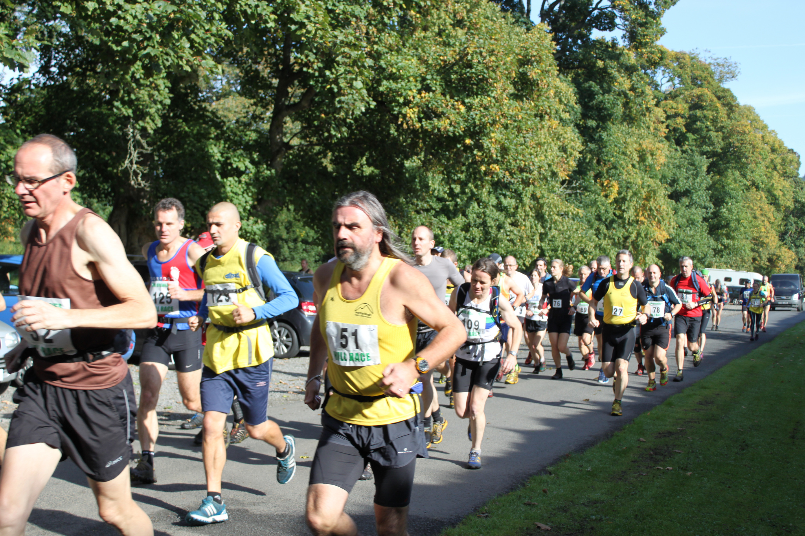
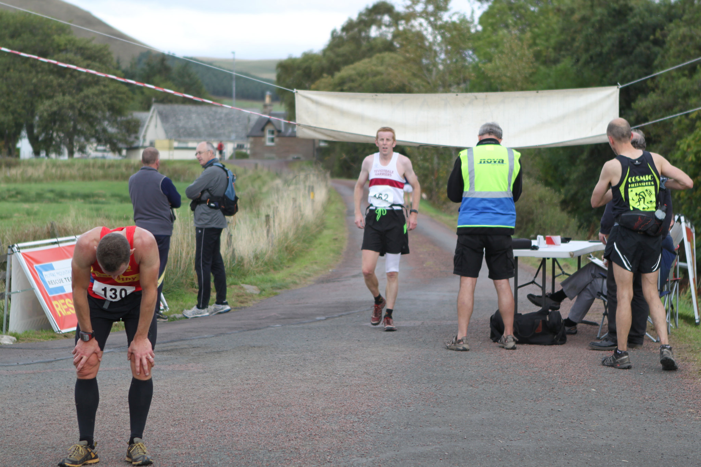
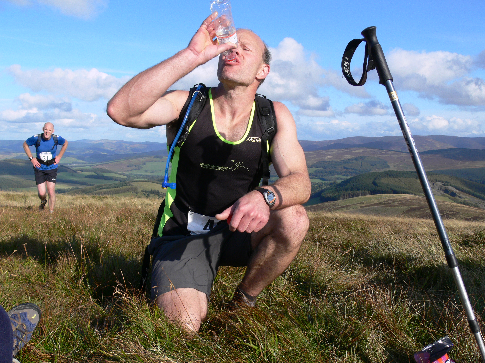
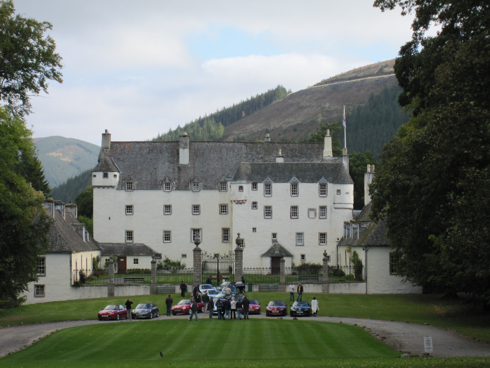
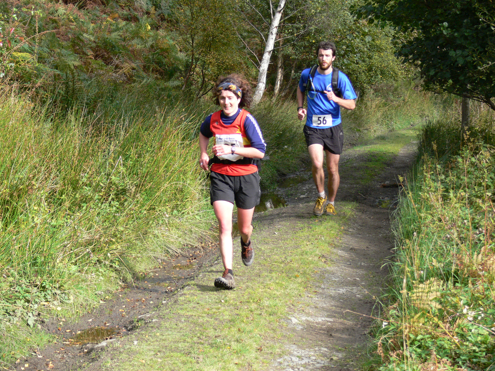

About

The Two Breweries was established in 1983, making it one
of the oldest hill races in Scotland. The race is held on
the 4th Saturday in September, starting on the lawn in
front of the courtyard gates
at Traquair House at 12 noon and finishing in front
of Broughton
Ales brewery.
The record (2:33:57) was set by John Taylor in 1991. John
was an international athlete who died in 2002, aged 33,
from a heart condition known as cardiomyopathy.
The John
Taylor Foundation was created to raise awareness of
this condition, and to assist young athletes. The women's
record (2:53:56) was set by Angela Mudge in 2000. Results
from previous years can be found
on www.scottishhillracing.co.uk.
You can find photos of previous races
on Flickr.
The route

The race is around 30km / 18 miles, and includes some 1500m /
4900ft of ascent. The terrain predominantly follows hill
tracks, but includes sections of open heather with some
short sections along country roads.
This race is an arduous event which should not be
undertaken by runners who are unfit, or are inexperienced
in the hills. Full emergency kit comprising wind and
waterproof full body cover, a map of the entire race
route, orienteering-type compass, whistle and food
equivalent to a chocolate bar must be carried by all
runners. Runners must be at least 18 years old.
There are eight marshalled checkpoints. Water is available
at Glenrath Farm and Stobo Home Farm. These checkpoints
are also retiral points. Hill rescue cover is provided by Moffat
Mountain Rescue.
|
OS grid reference |
Closing time |
| Birkscairn Hill |
73/275332 |
1315 |
| Hundleshope |
73/250339 |
1350 |
| Stob Law |
73/230333 |
1425 |
| Glenrath Farm |
73/207342 |
1440 |
| Whitelaw Hill |
72/193354 |
1505 |
| Stobo Home Farm |
72/179370 |
1530 |
| Trahenna Hill |
72/136374 |
1630 |
| Ratchill Farm |
72/119364 |
1650 |
This fly-over of the route will give you an idea of what to expect.
Entries

Pre-enter on-line
at Entry
Central.
A bus leaves Broughton for Traquhair at 10am, with race
registration at Traquhair. There is a strict kit-check
before the race.
Prize giving is held at Broughton Village Hall, where
runners and supporters can enjoy hot soup, cake and
perhaps even a well-earned beer!
Local

We are delighted to be supported
by Traquair House and Broughton
Ales, both of whose fine products regularly appear as
prizes. The race would not be possible without the kind
permission of the local landowners.
We are also delighted to be associated
with Tweedgreen, a
voluntary organisation of local people working towards a
self-sustaining Tweeddale by promoting local food,
encouraging local energy generation, and reducing energy
use and waste.
Locals taking part will appreciate the beauty and
interests of the Scottish Borders. Those coming from
further afield may be interested in what the Borders
offers. Why not treat the family to a weekend away! Local
accommodation and information about the area can be found
at the following tourism sites:
Links

Contact
Please don't hesitate to contact the race organiser (John
Hamer) if you have any questions about the race.
Please check your email address is correct. You may like
to include an alternative contact method in the body of
your email, such as a phone number.
Thank you!
Your message has been sent.
Something went wrong
Your message was not able to be delivered. Did you miss
including your name or email, perhaps? If so, then please try again. If the problem persists,
then maybe ask someone from
the Westerlands
CCC to forward your message to the Two Breweries Hill
Race organiser.